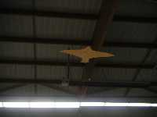
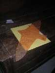
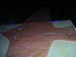
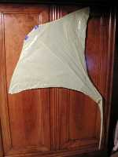
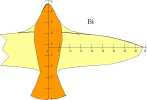
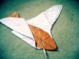
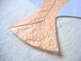
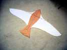

Réalisations Indoor
[CVs récents]


Bambou Bird


Pour me reposer du gigantisme de Megoel (je sais, il y a bien plus grand...) et occuper la saison d'hiver 2003/2004, je me suis un peu lancé dans l'Indoor. Outre le Harfang allégé, j'ai plongé dans la taille du bambou refendu pour construire un oiseau léger entoilé en papier japonais. Je pourrais en fait le faire encore plus léger, comme les "cacahuètes", modèles réduits à hélice pour le vol indoor, mais ça devient trop fragile, soit pour le transport, soit quand il est emporté par un pilotable qui passe, soit quand une bonne âme le ramasse par la pointe de l'aile pour vous le remettre.


Actuellement, le diamètre du longeron en bout d'aile est de 1 mm. J'ai quand même voulu le faire démontable : ce longeron est en 3 parties qui s'assemblent près du centre mais se démontent pour permettre le transport de l'oiseau dans une chemise en carton A4.
Manta


Restons dans l'indoor : Manta offre plus de surface et est plus facile à piloter. L'armature (démontable !) est toujours en bambou, mais la toile est en plastique (provisoirement ?). Si j'ai le temps, je la réaliserai nettement plus grande, encore en bambou, mais entoilée en spi. La concentration des poids à l'avant, l'arête ventrale et la queue rendent son pilotage très aisé : dès qu'on tire, elle vire vers vous.
Bi


Un jour, j'ai perdu Bambou Bird. Alors j'ai voulu en refaire un, juste un peu plus grand.


La pliabilité était meilleure grâce à un arc transversal en 3 morceaux. Mais en longueur, il ne tient quand même pas dans un dossier A4. Comme je n'avais plus que des restes de papier de soie (récupérés dans des emballages cadeaux !) je l'ai fait en 3 morceaux, assemblés à la colle à bois qui sert à tout dans la construction bambou. Les morceaux sont de 2 couleurs différentes, et voilà pourquoi il s'appelle Bi !


J'ai fait l'armature de la queue en "Y" pour qu'elle puisse s'aplatir au rangement, mais prendre en vol une forme en "V" favorable à la dirigibilité. Mais comme j'ai supprimé le longeron central, elle ne prend pas beaucoup cette forme, cependant "Bi" se manoeuvre quand même bien. J'ai surtout fait attention à ne pas être trop lourd à l'arrière (longeron d'aile bien à l'avant, renfort de tête, légèreté de la queue...) et à ne pas "cambrer" en longi. Ceci afin que l'oiseau plane bien vers l'avant, nécessité enseignée par quelques prestations indoor.


A "l'entoilage", j'ai mis un fil tout autour du papier pour éviter les déchirures : en indoor, les manipulations brutales sont fréquentes : accroché par un pilotable, ramassé par un spectateur, pris dans un filet de but, marché sur la ficelle en le tenant à la main, bride passée par dessus et on tire... Faut que ça résiste !
Bon, j'ai fini, je bride, je marche 3 pas chez moi pour voir s'il vole bien et je tombe... sur Bambou Bird qui s'était caché derrière un coffre ! Eh ben, maintenant, j'ai deux oiseaux papier/bambou indoor...